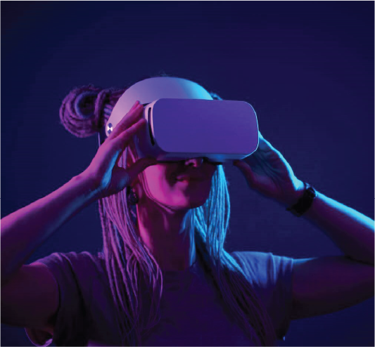

Many developers have taken to addressing these problems head on, hopefully reducing their lingering affect as Virtual Reality continues to develop. For instance, the company Oculus recently released their newest headset, the Quest 2. This headset can operate independently of a computer, so it is far less of a hassle to set up and manage. Additionally, it is far lighter and more comfortable than its previous iterations, vastly increasing comfort appeal. Companies have sought to address the issue of VR sickness in a variety of ways. Some allow the user to teleport around the virtual space. Others opt for movement that is more floaty (i.e. zero gravity) to avoid the harsh starts and stops that can cause users discomfort. Still others simply tell users to get used to the movement, which admittedly does happen after some displeasure. As the field expands, new ideas, technologies, and applications are frequently being developed, expanding the potential of Virtual Reality. And as costs lower and accessibility rises, new developers flock to the field to cash in on that potential.
